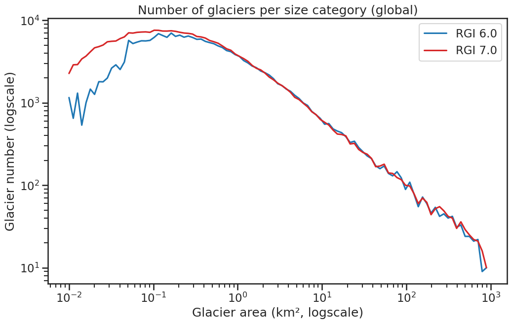
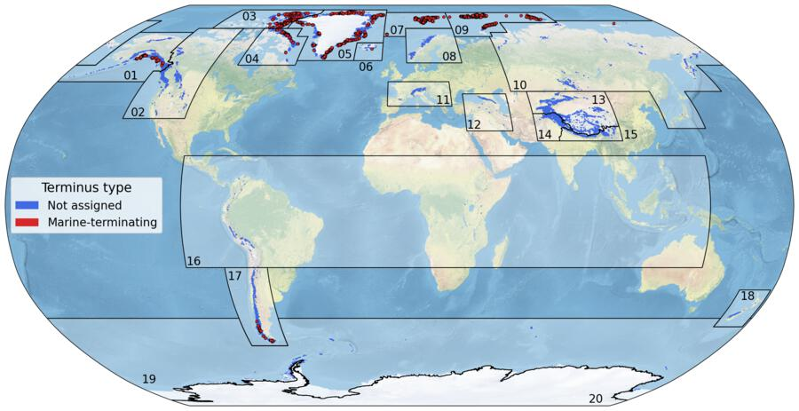
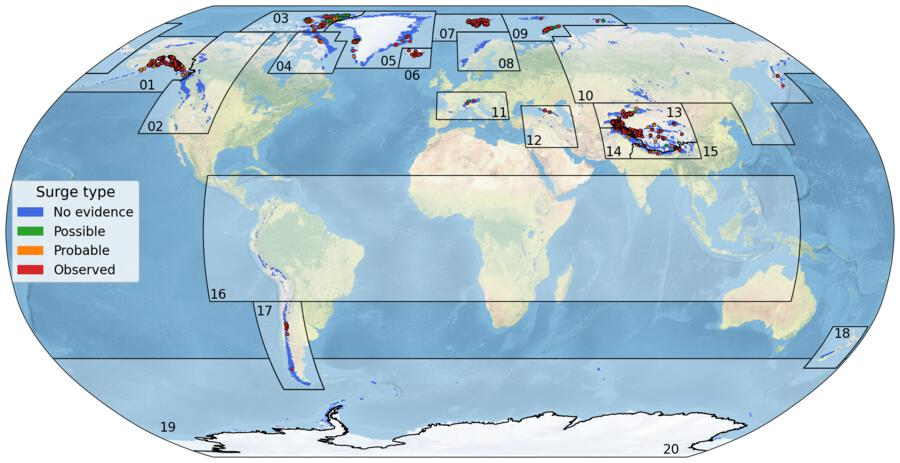

Global statistics#
This section provides plots and tables summarizing some basic statistics of the RGI 7.0 compared to RGI 6.0. A table comparing the area and number of glaciers per region can be found and downloaded in Regional areas and counts in RGI 6.0 and RGI 7.0.
Target year#
Number of glaciers (%) within intervals around the target year 2000 in RGI 6.0 and RGI 7.0.
Outline year |
RGI 6.0 (%) |
RGI 7.0 (%) |
|---|---|---|
2000 ± 2 years |
48.9 |
58 |
2000 ± 2-5 years |
15.9 |
18.7 |
2000 ± 5-10 years |
27 |
19.5 |
2000 ± > 10 years |
8.2 |
3.8 |
Size classes#
Number of glaciers (N) and percentage of total number per size class in RGI 6.0 and RGI 7.0.
Area |
RGI 6.0 (N) |
RGI 6.0 (%) |
RGI 7.0 (N) |
RGI 7.0 (%) |
|---|---|---|---|---|
< 1 km² |
170576 |
79.1 |
229626 |
83.6 |
1-10 km² |
38054 |
17.7 |
38081 |
13.9 |
10-100 km² |
5955 |
2.8 |
5830 |
2.1 |
> 100 km² |
962 |
0.4 |
994 |
0.4 |
Total |
215547 |
100 |
274531 |
100 |

Fig. 85 Number of glaciers per size category (log-log scale). A flatter curve for the smaller area classes indicates that many uncharted glaciers in RGI 6.0 have been captured in RGI 7.0.#
Global attributes statistics#
Number of glaciers (N) and area (km²) per terminus type in RGI 7.0 and RGI 6.0. Note that the default designation in RGI 7.0 is now “Not assigned”, while in RGI 6.0 lake-terminating glaciers and shelf-terminating glaciers were identified in some regions. The RGI region 19 is entirely labelled as “Not assigned” in RGI 7.0.
Value |
Terminus type |
RGI 7.0 (N) |
RGI 6.0 (N) |
RGI 7.0 (Area) |
RGI 6.0 (Area) |
|---|---|---|---|---|---|
0 |
Land-terminating |
0 |
212005 |
0 |
397096 |
1 |
Marine-terminating |
1561 |
3075 |
159302 |
197514 |
2 |
Lake-terminating |
0 |
298 |
0 |
27172 |
3 |
Shelf-terminating |
0 |
169 |
0 |
83958 |
9 |
Not assigned |
272970 |
0 |
547442 |
0 |

Fig. 86 Terminus type (term_type) attribute distribution in RGI 7.0. Download high resolution version.#
{kind=link}
Number of glaciers (N) and area (km²) per surge type attribute in RGI 7.0 and RGI 6.0.
Value |
Surge type |
RGI 7.0 (N) |
RGI 6.0 (N) |
RGI 7.0 (Area) |
RGI 6.0 (Area) |
|---|---|---|---|---|---|
0 |
No evidence |
271901 |
42515 |
566418 |
127426 |
1 |
Possible |
630 |
509 |
23334 |
23622 |
2 |
Probable |
825 |
383 |
31254 |
19376 |
3 |
Observed |
1175 |
448 |
85738 |
43066 |
9 |
Not assigned |
0 |
171692 |
0 |
492249 |

Fig. 87 Surge type (surge_type) attribute distribution in RGI 7.0. Download high resolution version.#
{kind=link}